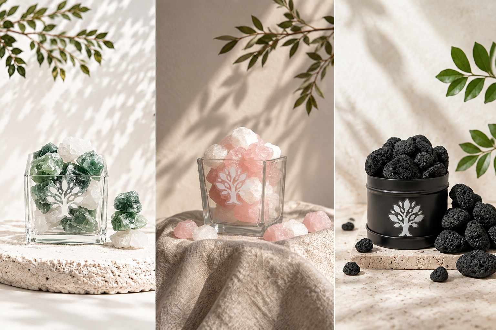

01
OUR STORY
취향을 담고,
마음을 나눕니다.
향기는 눈에 보이지 않지만 오래 기억됩니다. 결이든은 당신의 공간과 마음에 자연스럽게 스며드는 향기를 고민합니다.
작은 선택이 더 따뜻한 일상으로 이어질 수 있도록, 제품 판매금액의 20%를 기부합니다.
SCENT · OBJECT · SHARING
결이든은 공간에 오래 머무는 향기 오브제를 만들고, 판매금액의 20%를 이웃과 나눕니다.

OUR STORY
향기는 눈에 보이지 않지만 오래 기억됩니다. 결이든은 당신의 공간과 마음에 자연스럽게 스며드는 향기를 고민합니다.
작은 선택이 더 따뜻한 일상으로 이어질 수 있도록, 제품 판매금액의 20%를 기부합니다.